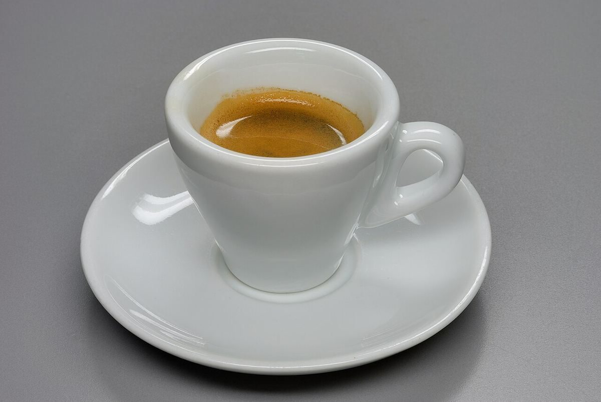
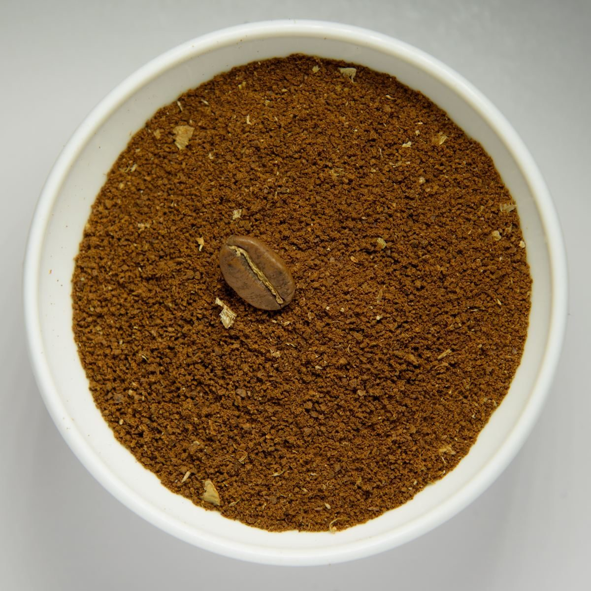

カフェ / 北海道苫小牧市
SMARTTIMEカフェスマートタイム
北海道苫小牧市北光町のカフェ「カフェスマートタイム」のご案内ページです。営業時間やメニューなど詳しいことは準備中。まずはInstagramをのぞいてみてください。

制作側の連想
「スマートタイム」から、設定画面のスイッチを思った
お店の名前の由来は分かりません。制作側は「スマート」と「タイム」という言葉から、スマートフォンの設定画面にある、オンとオフを切り替えるスイッチを連想しました。そこでこのサイトは、メニューの各項目を小さなスイッチで表し、いまいるページだけが「オン」になる作りにしています。お店の理念や由来とは無関係の、制作側の連想です。
写真(イメージ)
カフェという言葉から選んだ写真
写真は苫小牧市の風景でも、お店のものでもありません。国外または撮影地不明のフリー素材です。

